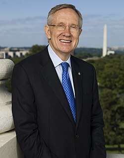

Harry Reid
U.S. senator from Nevada, 1939 to 2021

The Senate majority leader who championed AAWSAP, the DIA's roughly $22 million UAP research contract with Bigelow Aerospace Advanced Space Studies. 1,2
Open in the interactive Watcher
Related
- AAWSAP Championed AAWSAP
- Congress
- Skinwalker Ranch A main AAWSAP research site
Sources
- Harry Reid Wikipedia
- Advanced Aerospace Threat Identification Program Wikipedia